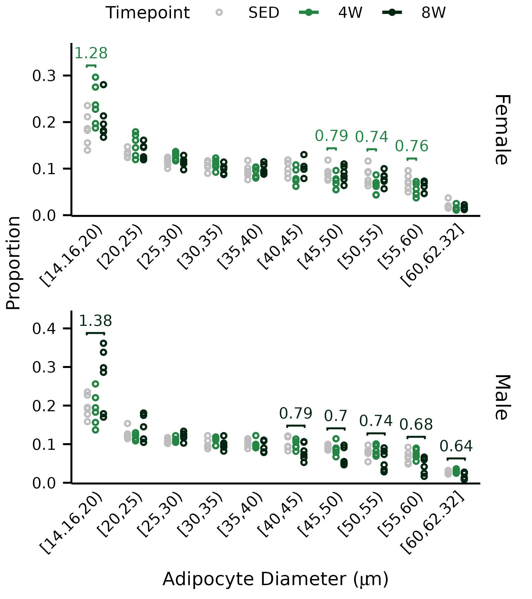
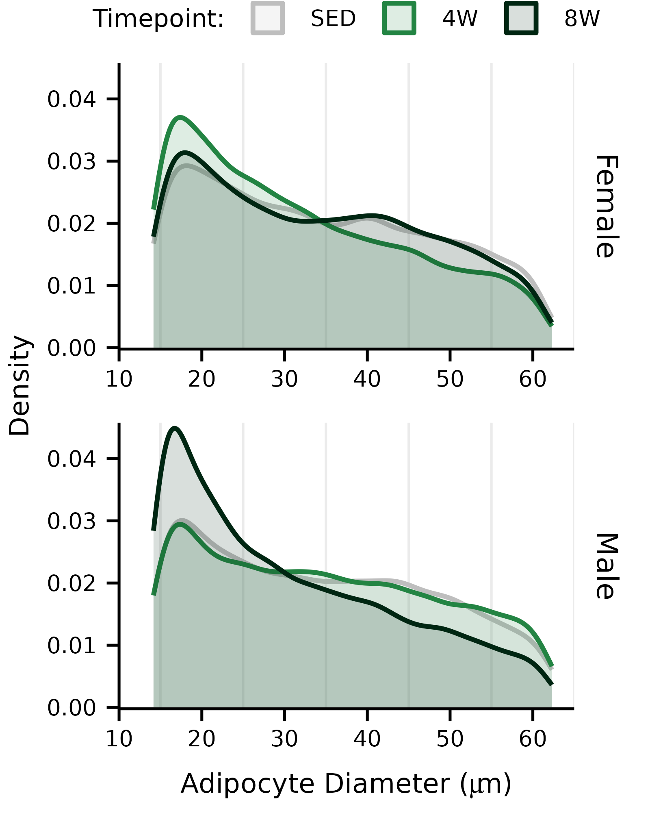

vignettes/articles/plot_adipocyte_size_distribution.Rmd
plot_adipocyte_size_distribution.RmdThis article generates plots of adipocyte size distributions (Fig. 1E, Extended Data Fig. 1D).
library(MotrpacRatTraining6moWATData)
library(MotrpacRatTraining6moWAT)
library(rstatix)
library(ggpubr)
library(dplyr)
library(latex2exp)
library(tidyr)
save_plots <- dir.exists(paths = file.path("..", "..", "plots"))
foo <- ADIPOCYTE_SIZE_STATS %>%
dplyr::rename(p = p.value, statistic = ratio) %>%
mutate(diameter_bin = as.ordered(diameter_bin),
statistic = round(statistic, 2),
p.adj = p,
p.adj.signif = cut(p.adj, include.lowest = TRUE, right = FALSE,
breaks = c(0, 1e-3, 1e-2, 0.05, 1),
labels = c("***", "**", "*", "ns"))) %>%
ungroup() %>%
separate_wider_delim(cols = contrast, names = c("group2", "group1"),
delim = " / ") %>%
dplyr::select(diameter_bin, sex, group1, group2, statistic,
p, p.adj, p.adj.signif)
levels(foo$diameter_bin)[c(1, 10)] <- c("[14.16,20)", "[60,62.32]")
# Bin adipocytes in 5 micron intervals by diameter
ADIPOCYTE_SIZE <- ADIPOCYTE_SIZE %>%
mutate(diameter_bin = cut(diameter, dig.lab = 4,
breaks = c(14.16, seq(20, 60, 5), 62.32),
include.lowest = TRUE, right = FALSE,
ordered_result = TRUE))
# Count adipocytes by bin and experimental group
count_summary <- ADIPOCYTE_SIZE %>%
group_by(pid, sex, timepoint, diameter_bin) %>%
summarise(binned_adipocytes = n()) %>%
group_by(pid) %>%
mutate(total_adipocytes = sum(binned_adipocytes),
adipocyte_prop = binned_adipocytes / total_adipocytes) %>%
ungroup()
stat.test <- count_summary %>%
group_by(diameter_bin, sex) %>%
t_test(adipocyte_prop ~ timepoint,
ref.group = "SED") %>%
add_xy_position(x = "diameter_bin", group = "timepoint",
dodge = 0.65) %>%
mutate(y.position = y.position - 0.015 - 0.08 * (sex == "Male")) %>%
dplyr::select(-c(statistic, p, p.adj, p.adj.signif)) %>%
left_join(foo, by = c("diameter_bin", "sex", "group2", "group1"))
timepoint_colors <- c("grey", "#238443", "#002612")
p0 <- ggplot(count_summary) +
geom_point(aes(x = diameter_bin,
y = adipocyte_prop,
color = timepoint),
size = 0.45, shape = 21,
position = position_dodge(width = 0.6)) +
facet_wrap(~ sex, ncol = 1,
strip.position = "right", scales = "free") +
stat_pvalue_manual(data = mutate(stat.test,
label2 = round(statistic, 2)),
# label = "p.adj.signif",
label = "statistic",
label.size = 1.76, # 5 pt
vjust = -0.5,
color = "group2",
bracket.size = 0.3,
step.group.by = "sex",
tip.length = 0.01,
hide.ns = TRUE) +
xlab(latex2exp::TeX("Adipocyte Diameter ($\\mu m$)")) +
scale_y_continuous(name = "Proportion",
expand = expansion(mult = c(5e-3, 0.15))) +
coord_cartesian(ylim = c(0, NA)) +
scale_color_manual(name = "Timepoint",
values = timepoint_colors) +
scale_fill_manual(name = "Timepoint",
values = alpha(timepoint_colors, 0.15)) +
theme_pub() +
theme(strip.background = element_blank(),
legend.key.size = unit(8, "pt"),
legend.position = "top",
legend.direction = "horizontal",
legend.margin = margin(t = 0, b = -5),
plot.margin = unit(c(0, rep(2, 3)), "pt"),
axis.text.x = element_text(angle = 45, hjust = 1, vjust = 1),
axis.ticks.x = element_blank(),
axis.ticks.length.x = unit(0, "pt"),
axis.text.x.bottom = element_text(margin = margin(t = 2, b = 2)),
panel.grid.major.x = element_blank(),
panel.grid.major.y = element_blank(),
panel.grid.minor.y = element_blank())
p0
ggsave(file.path("..", "..", "plots", "adipocyte_bin_plot.pdf"), p0,
height = 2.7, width = 2.4, family = "ArialMT")
## Density plot ------------------
p1 <- ggplot(ADIPOCYTE_SIZE,
aes(x = diameter, color = timepoint, fill = timepoint)) +
geom_density() +
facet_wrap(~ sex, ncol = 1, drop = FALSE, scales = "free_x",
strip.position = "right") +
scale_x_continuous(name = latex2exp::TeX(
"Adipocyte Diameter ($\\mu m$)"
),
# The density lines will continue to any specified limits
# Need to stop at data range and add expansion to reach
# desired values
limits = c(range(ADIPOCYTE_SIZE$diameter)),
expand = expansion(add = c(min(ADIPOCYTE_SIZE$diameter) - 10,
65 - max(ADIPOCYTE_SIZE$diameter))),
breaks = seq(10, 60, 10)
) +
coord_cartesian(xlim = c(10, 65), default = T) +
scale_y_continuous(name = "Density",
expand = expansion(mult = c(5e-3, 0.02))) +
coord_cartesian(ylim = c(0, NA)) +
scale_color_manual(name = "Timepoint:",
values = timepoint_colors) +
scale_fill_manual(name = "Timepoint:",
values = alpha(timepoint_colors, 0.15)) +
theme_pub() +
theme(strip.background = element_blank(),
legend.key.size = unit(8, "pt"),
legend.position = "top",
legend.direction = "horizontal",
legend.margin = margin(t = 0, b = -5),
plot.margin = unit(c(0, rep(2, 3)), "pt"),
axis.text.x.bottom = element_text(margin = margin(t = 2, b = 2)),
panel.grid.major.x = element_blank(),
panel.grid.major.y = element_blank(),
panel.grid.minor.y = element_blank())
p1